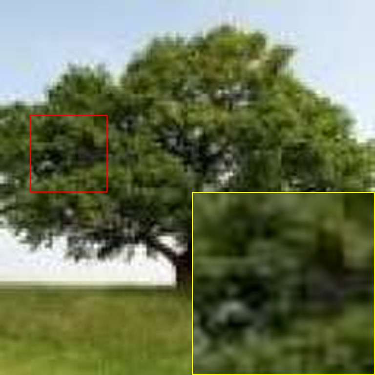
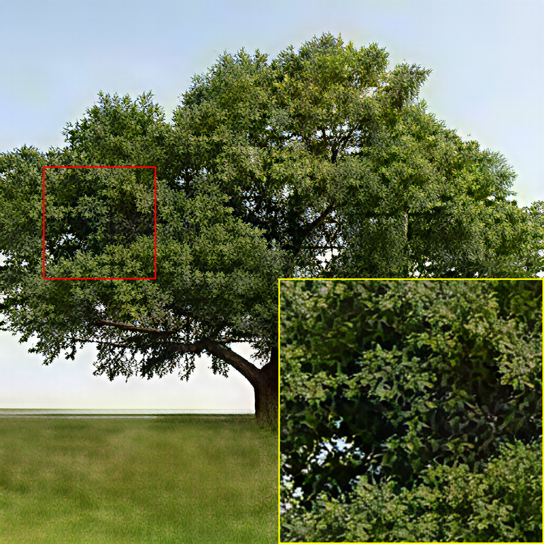
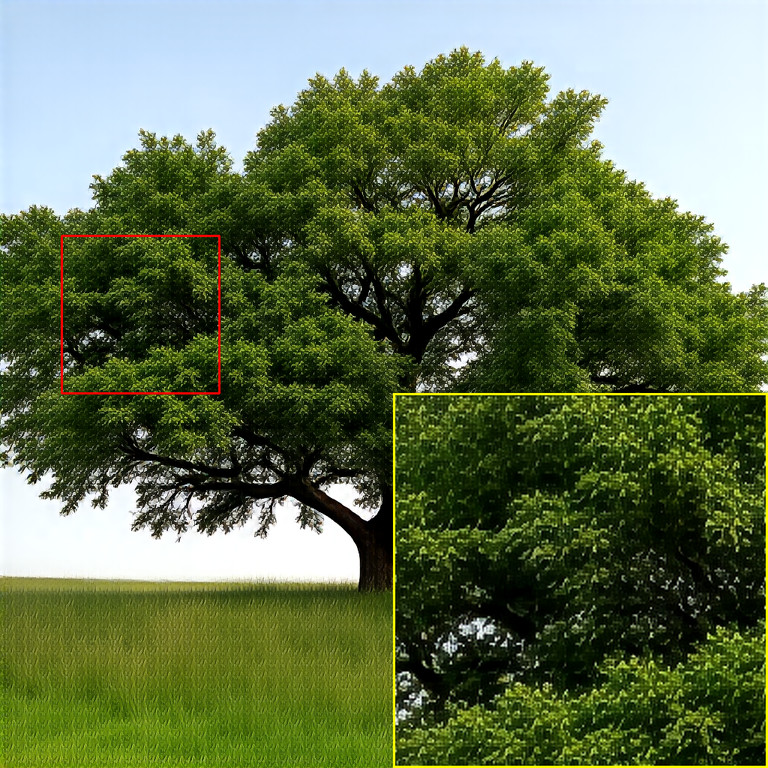
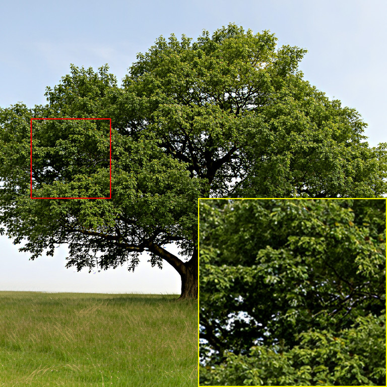
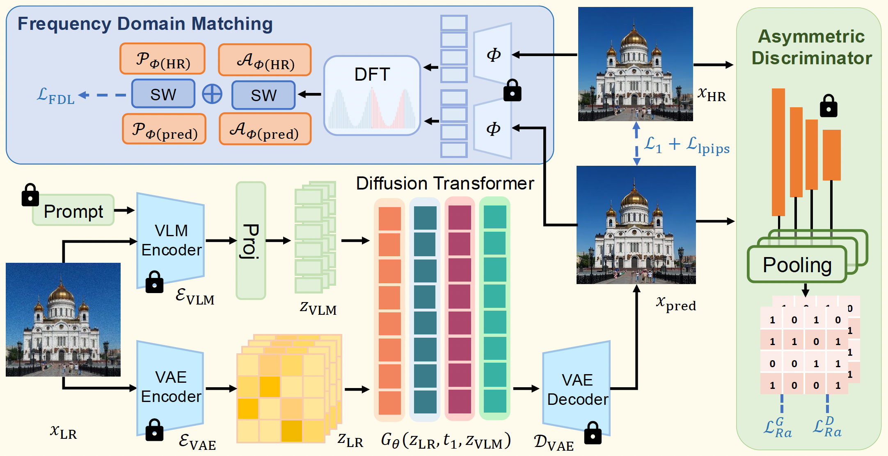
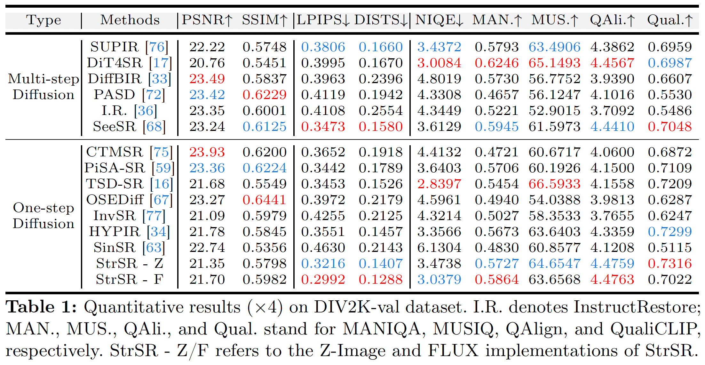
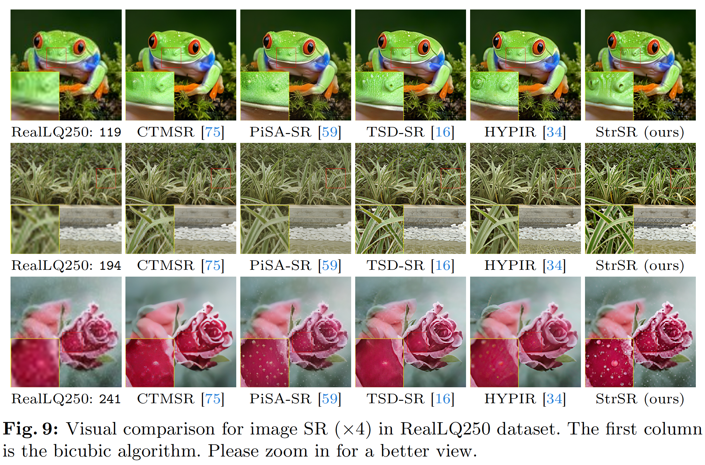

Trajectory Regularization
An asymmetric discriminator based on CLIP-ConvNeXt helps align the one-step restoration trajectory with high-quality image distributions without heavy progressive distillation.
StrSR is a one-step adversarial distillation framework that brings diffusion transformer priors to real-world image super-resolution while suppressing DiT-specific periodic artifacts.
1Shanghai Jiao Tong University 2Shenzhen Transsion Holdings Co., Ltd.
*Equal contribution †Corresponding authors




Diffusion transformer (DiT) architectures show great potential for real-world image super-resolution (Real-ISR). However, their computationally expensive iterative sampling necessitates one-step distillation. Existing one-step distillation methods struggle with Real-ISR on DiT: they suffer from fundamental trajectory mismatch and generate severe grid-like periodic artifacts.
To tackle these challenges, we propose StrSR, a novel one-step adversarial distillation framework featuring spectral and trajectory regularization. An asymmetric discriminative distillation architecture bridges the trajectory gap, while frequency distribution matching suppresses DiT-specific periodic artifacts caused by high-frequency spectral leakage. Extensive experiments demonstrate state-of-the-art performance in Real-ISR, across both quantitative metrics and visual perception.
StrSR combines dual-encoder conditioning, one-step DiT generation, asymmetric adversarial distillation, and frequency-domain regularization in a unified Real-ISR framework.

An asymmetric discriminator based on CLIP-ConvNeXt helps align the one-step restoration trajectory with high-quality image distributions without heavy progressive distillation.
Frequency distribution matching constrains both amplitude and phase statistics, reducing the grid-like periodic artifacts that appear in one-step DiT restoration.
A VLM encoder captures semantic guidance while a VAE encoder preserves low-level spatial structure, giving the DiT generator both global priors and local restoration cues.
The paper evaluates StrSR on synthetic and real-world Real-ISR benchmarks, including DIV2K-Val, RealSR, and RealLQ250. Larger versions of the figures are shown below.




@inproceedings{wang2026strsr,
title={Spectral and Trajectory Regularization for Diffusion Transformer Super-Resolution},
author={Wang, Jingkai and Tang, Yixin and Gong, Jue and Li, Jiatong and Li, Shu and Liu, Libo and Lan, Jianliang and Liu, Yutong and Zhang, Yulun},
booktitle={European Conference on Computer Vision (ECCV)},
year={2026}
}